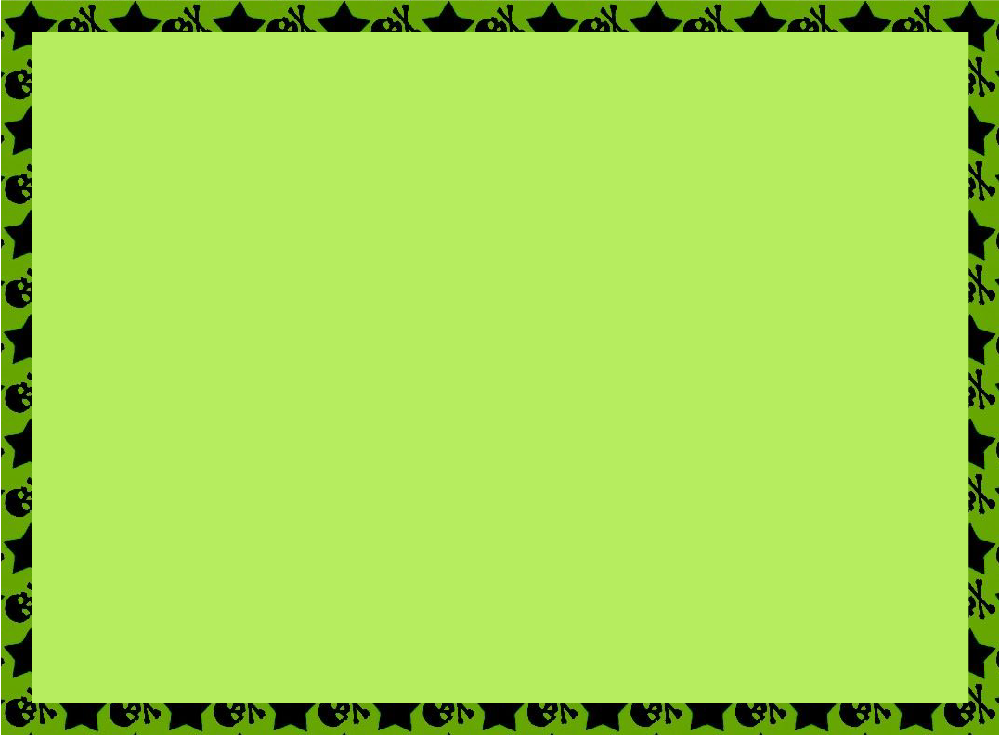
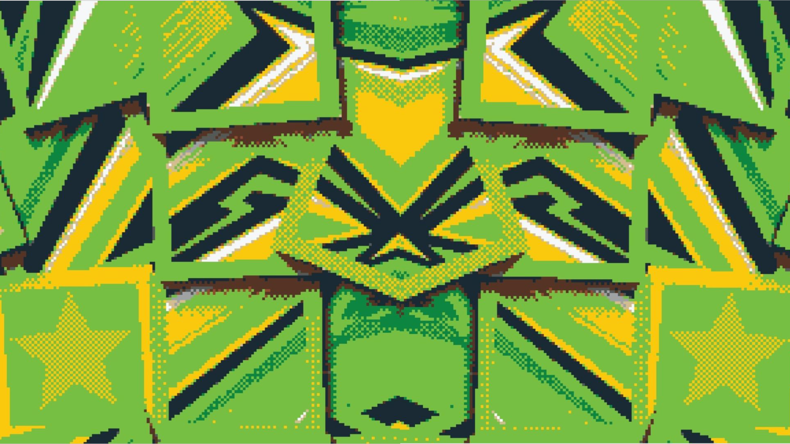
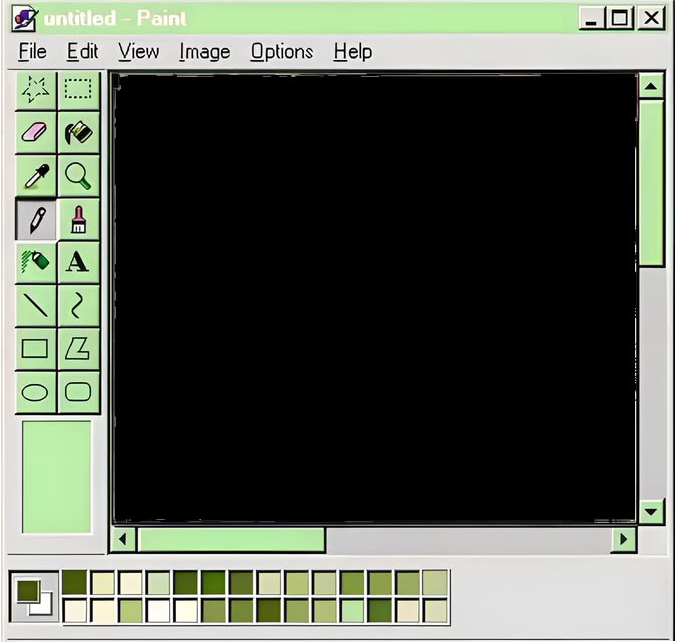
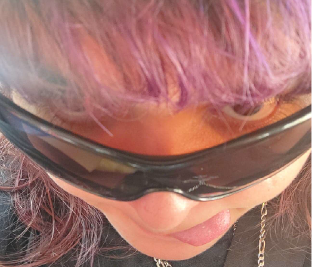
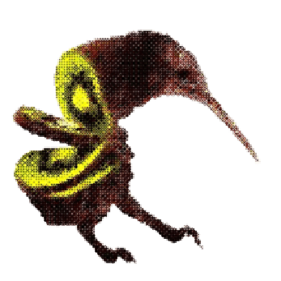
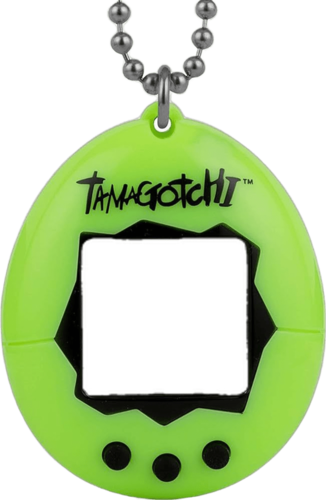
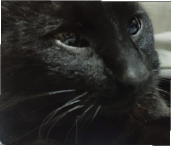
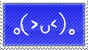
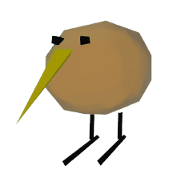
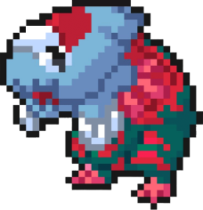

Darkko Nair
Disfruto de los videojuegos, la música y los casos policiales.
Mis cosas favoritas son el color verde, mi 3DS, pintar y diseñar cosas informáticas.
Tengo un gatito llamado Cuco y mi pokémon favorito es Dracovish.





Disfruto de los videojuegos, la música y los casos policiales.
Mis cosas favoritas son el color verde, mi 3DS, pintar y diseñar cosas informáticas.
Tengo un gatito llamado Cuco y mi pokémon favorito es Dracovish.




